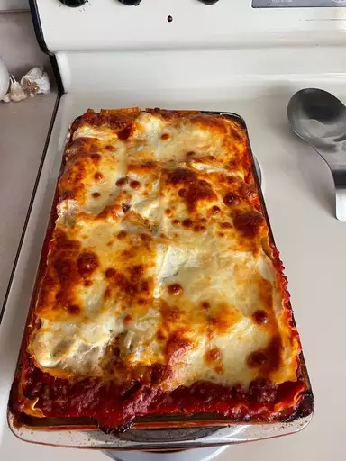

World's Best Lasagna
Back

Description
This lasagna recipe takes a little work, but it is so satisfying and filling that it's worth it!
When John Chandler submitted this lasagna recipe to Allrecipes more than 20 years ago, he had no idea how successful it would become. One of our top-performing recipes of all time, World's Best Lasagna racks up more than 7 million views per year and has ranked among the most popular lasagna recipes on the internet for two decades. Unfortunately, John unexpectedly passed away at 53 years old — read all about his life and legacy here.
Make our most popular lasagna today to find out what all the fuss is about!
- Prep Time: 30 mins
- Cook Time: 2 hrs 30 mins + 15 mins cool off before serving
- Total Time: 3 hrs 15 mins
- Servings: 12
Nutrition Facts (per serving)
- Calories: 448
- Fat: 21g
- Carbs: 37g
- Proten: 30g
Ingredients
- 1 Pound Sweet Italian Sausage
- 3/4 Pound Lean Ground Beef
- 1/2 Cup Minced Onion
- 2 Cloves Garlic, Crushed
- 1 (28 ounce) can crushed tomato
- 2 (6.5 ounce) cans canned tomato sauce
- 2 (6 ounce) cans tomato paste
- 1/2 Cup Water
- 2 Tablespoons White Sugar
- 4 Tablespoons Chopped Fresh Parsley, Divided
- 1 1/2 Teaspoons Dried Basil Leaves
- 1 1/2 Teaspoons Salt, Divided, or to Taste
- 1 Teaspoon Italian Seasoning
- 1/2 Teaspoon Fennel Seeds
- 1/4 Teaspoon Ground Black Pepper
- 12 Lasagna Noodles
- 16 Ounces Ricotta Cheese
- 1 Egg
- 3/4 Pound Mozzarella Cheese, Sliced
- 3/4 Cup Grated Parmesan Cheese
Steps
How to Make Lasagna Step-By-Step
- Make the meat sauce.
- Cook the noodles.
- Make the ricotta mixture.
- Layer the lasagna according to the recipe instructions.
- Cover with foil and bake.
- Let the lasagna rest before serving.
How to Layer Lasagna
- Meat sauce
- Noodles
- Ricotta mixture
- Mozzarella
- Meat sauce
- Parmesan cheese
- Repeat the layers, then top with the remaining Parmesan.
How Long to Cook Lasagna
The assembled lasagna should take about 50 minutes to cook in an oven preheated to 375 degrees F. Cover it with foil for the first 25 minutes, then let it cook uncovered for the final 25 minutes. Also, it's important to let the lasagna rest at room temperature for about 15 minutes before you cut into it.